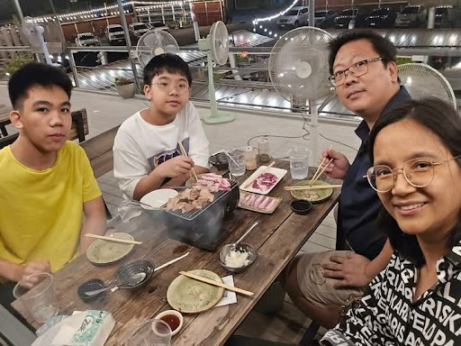

วันแม่แห่งชาติ
สิ่งที่อยากบอกแม่
ขอบคุณที่เลี้ยงดูผมให้เป็นผมแบบทุกวันนี้


บทกลอนที่มอบให้แม่
แม่นั้นเปรียบเทียบพระอรหันต์ สุดจะสรรบรรยายมากมายข้อ เก้าเดือนอุ้มคุ้มครองป้องพะนอ ได้เกิดก่อชีวิตจิตวิญญาณ์
ขอบคุณที่เลี้ยงดูผมให้เป็นผมแบบทุกวันนี้
แม่นั้นเปรียบเทียบพระอรหันต์ สุดจะสรรบรรยายมากมายข้อ เก้าเดือนอุ้มคุ้มครองป้องพะนอ ได้เกิดก่อชีวิตจิตวิญญาณ์